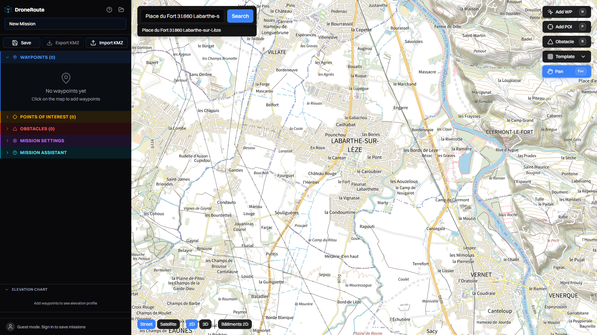
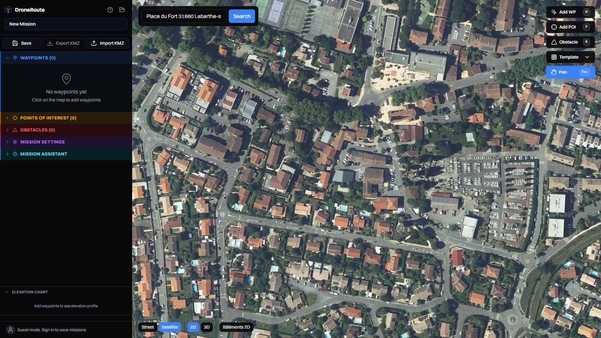
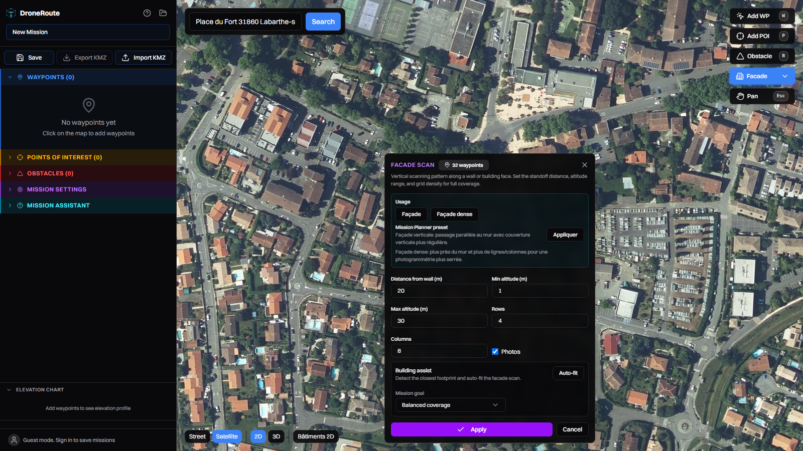
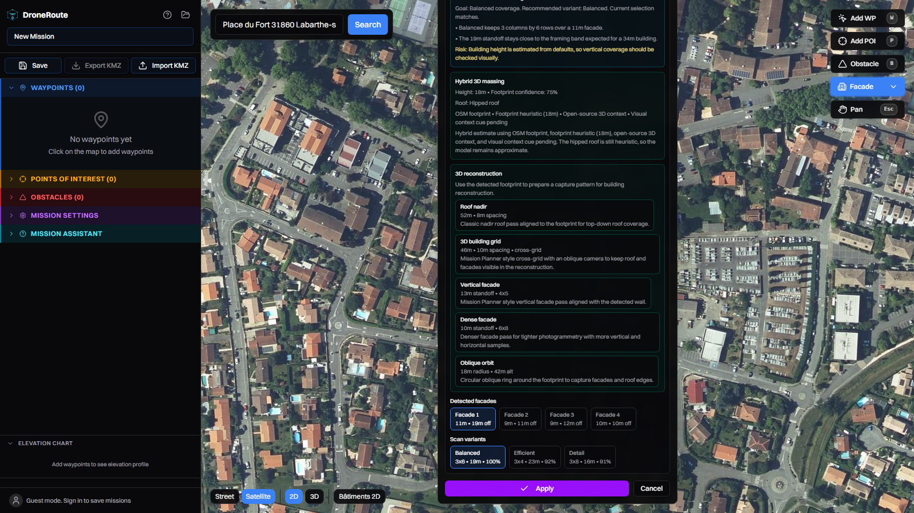
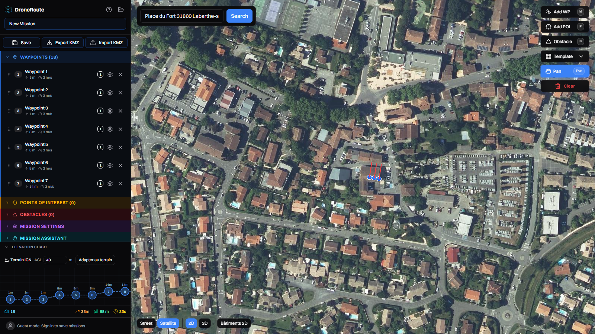
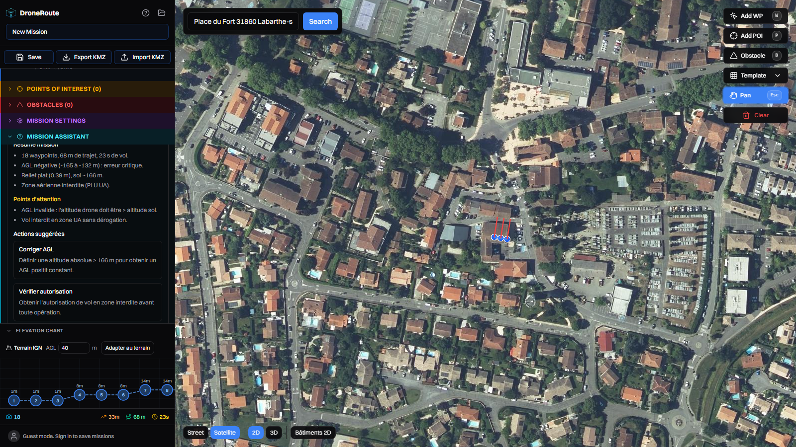
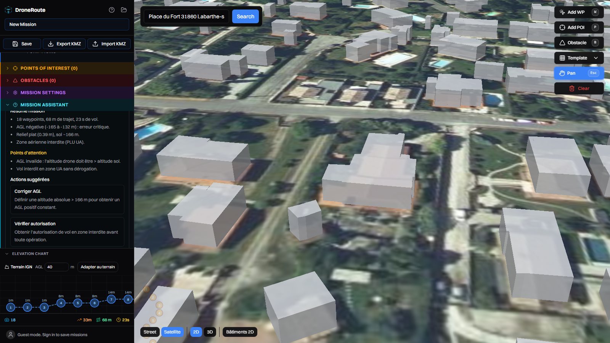

Parcours : recherche BAN → BD ORTHO → gabarit Facade (2 clics) →
Building assist Auto-fit → Apply → analyse IA locale → 3D → export KMZ.
Video — parcours facade complet.Enregistrement integral de la session (avec attente de l'IA
locale).

1. Recherche BAN.« Place du Fort 31860 Labarthe-sur-Leze » via la Base Adresse
Nationale (sans clef) ; clic sur le resultat = vol carte + zoom 15,
puis zoom 17 manuel.

2. L'eglise en BD ORTHO 20 cm.Fond satellite IGN (Géoplateforme, Licence Ouverte) — le bati de
l'eglise Saint-Andre est visible au centre-nord.

3. Gabarit Facade (Template → Facade scan).Deux clics le long du flanc sud : le panneau
FACADE SCAN s'ouvre (32 waypoints, preset Mission Planner,
distance 20 m, 4 lignes x 8 colonnes, bouton Auto-fit).

4. Building assist (Auto-fit).Detection OSM du footprint, recommandation
Copilot (Balanced, facade 11 m), Hybrid 3D massing (18
m, toit en croupe), Detected facades (4 segments) et
Scan variants (Balanced / Efficient / Detail).

5. Mission generee (Apply).18 waypoints sur l'eglise, profil d'elevation (1→14 m), stats 33 m
/ 68 m / 23 s. La vue est re-centree sur l'eglise apres l'ajustement
auto de la carte.

6. Analyse IA locale (Ollama + Qwen).L'IA croise mission + MNT IGN + site :
AGL negative critique (vol sous le sol a 166 m NGF),
zone UA interdite, et recommande
« Definissez une altitude AGL positive constante » +
autorisation de vol. Chips meteo/parcelle/PLU/DGAC jointes.

7. Vue 3D.Batiments extrudes (OpenFreeMap) sur BD ORTHO avec relief —
controle visuel des degagements avant vol.8. Export KMZ.Bouton Export KMZ → eglise-facade.kmz (3 Ko,
waylines.wpml + template.kml), importable dans DJI Pilot 2.